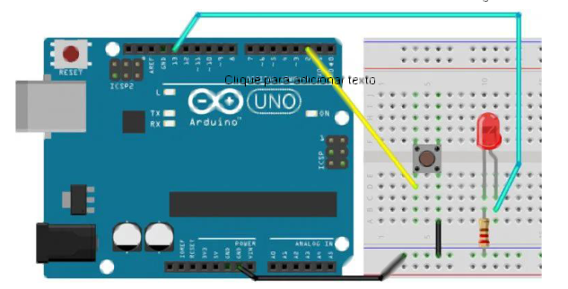

Lab03 - Botão
Entradas Digitais¶
Conceitos Importantes¶
Entradas Digitais¶
Uma entrada digital no Arduino pode ler apenas dois estados: HIGH (nível alto, 5V) ou LOW (nível baixo, 0V). É ideal para componentes que possuem apenas dois estados, como botões, chaves e sensores digitais.
Pull-up e Pull-down¶
Resistores de pull-up e pull-down são utilizados para garantir um estado lógico definido quando um botão não está pressionado, evitando estados flutuantes:
- Pull-up: Mantém o pino em nível alto (HIGH) quando o botão não está pressionado
- Pull-down: Mantém o pino em nível baixo (LOW) quando o botão não está pressionado
O Arduino possui resistores pull-up internos que podem ser ativados com pinMode(pino, INPUT_PULLUP).
Debounce¶
Botões mecânicos frequentemente geram múltiplas transições (ruídos) quando pressionados ou soltos. O debounce é uma técnica para filtrar essas transições e garantir leituras estáveis.
Desafio 1: Controle de LED com Botão¶
Objetivo: Utilizar um botão para controlar um LED, implementando a técnica de debounce.
Instruções:¶
-
Monte o circuito conforme mostrado na imagem abaixo: 
-
Conecte:
- Botão ao pino digital 2
-
LED ao pino digital 13
-
Implemente um código que:
- Quando o botão for pressionado e solto, o LED mude de estado (ligado para desligado ou vice-versa)
- Quando o botão for pressionado e mantido, o LED mude de estado apenas uma vez
Código Base:¶
// const é uma constante. logo o valor não muda
const int buttonPin = 2;
const int ledPin = 13;
// cria uma variável
int buttonState = 0;
void setup() {
// configura o LED como saída:
pinMode(ledPin, OUTPUT);
// configura o botão como entrada com pull-up interno:
pinMode(buttonPin, INPUT_PULLUP);
}
void loop() {
// Lê o estado do botão:
buttonState = digitalRead(buttonPin);
// se o botão estiver pressionado (nível LOW devido ao pull-up)
if (buttonState == LOW) {
// liga o led
digitalWrite(ledPin, HIGH);
} else {
// apaga o led
digitalWrite(ledPin, LOW);
delay(1000);
}
}
Etapa 1: Análise do Código Base¶
Execute o código fornecido e observe seu comportamento, respondendo: - O que acontece quando você pressiona e solta o botão? - O que acontece quando pressiona e mantém o botão pressionado?
Atenção: Você vai notar que o funcionamento nem sempre é preciso. Às vezes o LED parece não responder corretamente ao botão. Isso ocorre devido ao problema de "bounce" (trepidação) dos botões mecânicos.
Etapa 2: Implementação de Debounce¶
Para resolver o problema de trepidação, vamos implementar a técnica de debounce utilizando a função millis():
const int buttonPin = 2; // Pino do botão
const int ledPin = 13; // Pino do LED
int ledState = LOW; // Estado atual do LED
int lastButtonState = HIGH; // Último estado do botão
int buttonState; // Estado atual do botão
unsigned long lastDebounceTime = 0; // Último tempo de debounce
unsigned long debounceDelay = 50; // Tempo de debounce de 50ms
void setup() {
pinMode(ledPin, OUTPUT);
pinMode(buttonPin, INPUT_PULLUP);
digitalWrite(ledPin, ledState);
}
void loop() {
// Leitura do botão
int reading = digitalRead(buttonPin);
// Se o estado mudou, reinicia o timer de debounce
if (reading != lastButtonState) {
lastDebounceTime = millis();
}
// Verifica se passou tempo suficiente desde a última mudança
if ((millis() - lastDebounceTime) > debounceDelay) {
// Se o estado lido for diferente do estado atual do botão
if (reading != buttonState) {
buttonState = reading;
// Se o botão foi pressionado (LOW devido ao pull-up)
if (buttonState == LOW) {
// Inverte o estado do LED
ledState = !ledState;
}
}
}
// Atualiza o LED de acordo com o estado
digitalWrite(ledPin, ledState);
// Salva o estado lido para comparação na próxima iteração
lastButtonState = reading;
}
Dicas:¶
- Entenda o fluxo do código e o papel de cada variável
- Observe como a função
millis()é usada para verificar o tempo decorrido - Note que o LED só muda de estado quando um botão é considerado estável por pelo menos 50ms
Desafio 2: Comunicação Serial para Monitoramento¶
Objetivo: Implementar comunicação serial para monitorar o estado do botão e do LED.
Instruções:¶
- Use o mesmo circuito do Desafio 1.
- Modifique o código para exibir no Monitor Serial:
- Estado atual do botão (Pressionado/Solto)
- Estado atual do LED (Ligado/Desligado)
- Timestamp em milissegundos
- Uma mensagem quando o estado do LED mudar
Exemplo de Saída Esperada:¶
[1500] Botão: Solto | LED: Desligado
[2100] Botão: Pressionado | LED: Desligado
[2160] Botão: Pressionado | LED: Ligado - LED mudou de estado!
[2700] Botão: Solto | LED: Ligado
Dicas:¶
-
Inicialize a comunicação serial no
setup(): -
Use
Serial.print()para enviar dados sem quebra de linha eSerial.println()para enviar com quebra de linha. -
Construa mensagens informativas:
-
Acesse o Monitor Serial através do menu "Ferramentas > Monitor Serial" ou pressionando Ctrl+Shift+M.